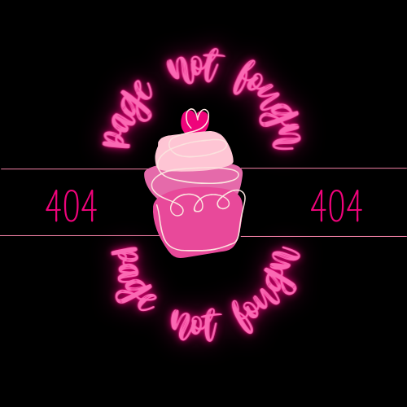

<ion-header>
  <ion-toolbar color="dark">
    <ion-progress-bar type="indeterminate" color="medium"></ion-progress-bar>
    <ion-title>Error 404</ion-title>
    
  </ion-toolbar>
</ion-header>

<ion-content [fullscreen]="true" class="auth-form">
  <ion-card id="home"> 
    <ion-card-title color="danger">
      <h1>►► Página no encontrada (╥﹏╥) ◄◄</h1>        
    </ion-card-title>
    <ion-card-subtitle color="light">
      <h2>►► La página ingresada no existe ◄◄</h2></ion-card-subtitle>
    <div class="imagen_logo"> 
      
    </div>
    <ion-card-content>      
      <ion-grid>
        <ion-row>
          <ion-col align-self-center>
            <ion-button [routerLink]="['/home']" id type="submit" color="light" expand="block" shape="round">Regresar al Home</ion-button>
          </ion-col>
        </ion-row>
      </ion-grid>
    </ion-card-content>
  </ion-card>
  
  
  <ion-footer>
    <ion-toolbar color="dark">
      <ion-title>Conoce nuestras redes</ion-title>
      <ion-segment [scrollable]="true" value="heart">
        <ion-segment-button value="logo-instagram">
          <ion-icon name="logo-instagram"></ion-icon>
        </ion-segment-button>
        <ion-segment-button value="logo-facebook">
          <ion-icon name="logo-facebook"></ion-icon>
        </ion-segment-button>
        <ion-segment-button value="camera-outline">
          <ion-icon name="camera-outline"></ion-icon>
        </ion-segment-button>      
        <ion-segment-button value="map-outline">
          <ion-icon href="mapa" name="map-outline"></ion-icon>
        </ion-segment-button>
        <ion-segment-button value="finger-print-outline">
          <ion-icon name="finger-print-outline"></ion-icon>
        </ion-segment-button>
      </ion-segment>
    </ion-toolbar>
  </ion-footer>
  </ion-content>
